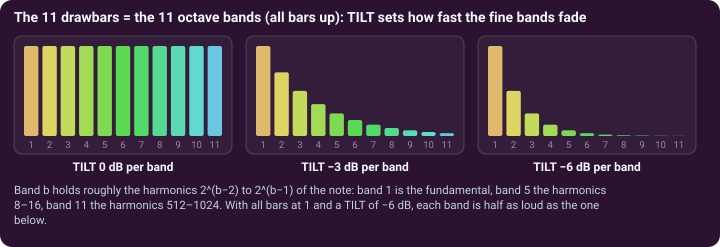
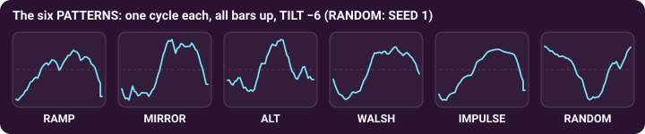
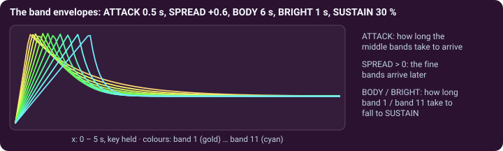

Additive synthesis with wavelets · page 1 of 3 · oscillator B1
The drawbars are the bands
An additive synthesizer builds a sound by adding parts. In OktoWave the parts are the 11 wavelet bands, and you set each one with a drawbar.
Eleven bars for eleven sizes
Open the third folder tab, OSC3 B1, and the WAVELET · ADDITIVE card shows eleven drawbars. Bar 1 is band 1, the slow body of the wave; bar 11 is band 11, the finest detail. A bar sets the level of its band, from 0 to 100 %. It is like a drawbar organ, except that each “pipe” is not one sine harmonic but a whole octave band of wavelet atoms. When the bars add up to more than 1 the sum is divided by that total, so opening more bars does not keep raising the level.
TILT multiplies the bars by a slope: −6 dB (the default) means each band is half as loud as the one below, whatever the bars say. It is the fastest way to make a tone darker (more negative) or brighter (towards 0 and above).

Pattern: what the atoms of a band are
A band is a row of atoms (1, 2, 4 … 1024 of them). The PATTERN decides which way each atom points, and so what the band's layer looks like:
- RAMP: all atoms the same way. MIRROR: the first half of a band up, the second half down. ALT: the bands take turns, one up and the next down.
- WALSH: the atoms of a band alternate, up, down, up, down. IMPULSE: only the first atom of each band, so all the detail sits at the start of the cycle, a tick. RANDOM: each atom up or down at random; SEED (0 to 99) chooses the dice.
Each band's layer is normalised, so a bar at 1 means the same strength in every band, whatever the pattern.

Every band has its own envelope
When a note starts, the bands do not all arrive and leave together. ATTACK is the rise time of the middle band; SPREAD makes the fine bands later (above 0) or earlier (below 0), up to four times slower or faster than the middle band. BODY and BRIGHT are how long band 1 and band 11 take to settle to SUSTAIN (0 to 100 %), the other bands in between. With the defaults (SUSTAIN 100 %, BODY and BRIGHT 20 s) the bands simply hold, like organ pipes; lower SUSTAIN and shorten BRIGHT, and the tone starts bright and mellows, as a struck bar does.

Try it. B1 is silent in a fresh patch: raise the B1 knob in OSC MIX (or load B · Theatre Organ). Then draw a staircase of bars from the left, move TILT, and flip through the six patterns while you hold a chord.